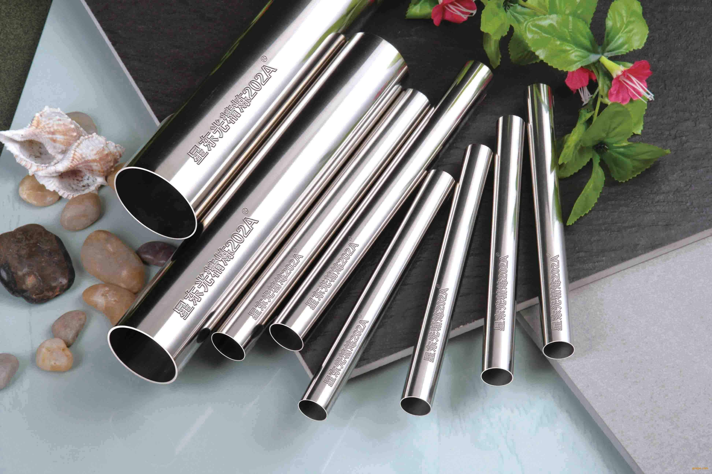

Introduction to Various Materials
Different materials have different chemical properties, and currently we mainly use them, which will be introduced in the following three categories: metals, plastics, and mixed materials
Material: Stainless steel

Stainless steel is a very durable and multifunctional material, which has a wide range of applications in many manufacturing industries. Stainless steel is an iron-based alloy that contains at least 10.5% chromium. Chromium gives stainless steel the characteristics of rust prevention and corrosion resistance, which is also the reason why it is named.
The advantage of stainless steel lies in its extremely high durability and strength. It can be used in many harsh environments, including high temperature and high pressure environments. In addition, stainless steel also has excellent oxidation resistance and corrosion resistance, which makes it widely used in many industries, such as construction, automobile manufacturing, food and beverage industries, etc.
However, the disadvantage of stainless steel is its high cost, especially compared to other common manufacturing materials such as carbon steel. In addition, the processing of stainless steel is also quite difficult, requiring specialized tools and techniques.
Overall, stainless steel is a widely used metal in the manufacturing industry, with its advantages in durability and versatility, but its high cost and processing difficulties.
Material: Polyethylene
Polyethylene is a thermoplastic resin polymerized from ethylene monomer (C2H4). Due to its low production cost and good processing performance, it has been widely used in the manufacturing industry.
The main advantages of polyethylene are its excellent chemical stability, acid and alkali resistance, resistance to most solvents, and good electrical insulation performance. In addition, polyethylene has a small specific gravity, only 0.92 times that of water, making it the lightest type of plastic among all, making it widely used in the packaging industry.
However, polyethylene has poor heat resistance and can only be used below 80 ℃ in general, and is flammable. In addition, the anti-aging performance of polyethylene is poor, so anti-aging agents need to be added in the production process.
In general, polyethylene is a kind of plastic widely used in the manufacturing industry. Its advantages lie in its good chemical stability and small specific gravity, but its heat resistance and aging resistance are poor
Application site:
1.Blow molded products are hollow shaped products of polyethylene, widely used in various containers, bottles, gasoline tanks, and daily necessities. These products are commonly used to hold cleaning agents, chemicals, cosmetics, etc., such as blow molded barrels, containers, and bottles. In addition, there are also blown film products, such as food packaging bags, miscellaneous shopping bags, and fertilizer lining films. These products are widely welcomed due to their lightweight, durability, and cost-effectiveness.
2.Polyethylene has a wide range of applications in the packaging field. Its light weight, flexibility, tear resistance and abrasion resistance make it an ideal choice for making various packaging materials, such as plastic bags, fresh-keeping films and foamed plastics. These packaging materials not only facilitate transportation and storage, but also effectively protect internal items such as pastries, candies, fried goods, preserves, biscuits, and condiments, ensuring their quality and taste are not damaged during distribution and consumption.
Modification method
1.Solution method:
Using toluene, xylene, chlorobenzene, etc. as reaction media in the liquid phase. PE、 The monomers and initiators are all dissolved in the reaction medium, and the system is homogeneous. The polarity of the medium and the chain transfer constant to the monomers have a significant impact on the grafting reaction.
2.Solid-phase method:
React PE powder directly with monomers, initiators, interfacial active agents, etc. Compared with traditional implementation methods, solid-phase method has the advantages of suitable reaction temperature, normal pressure, basic preservation of inherent polymer properties, no need for solvent recovery, simple post-treatment, high efficiency and energy conservation.
3.Melting method:
In the molten state, free radicals are generated through the thermal decomposition of the initiator, which in turn triggers the production of free radicals in the macromolecular chain. In the presence of grafting monomers, free radical copolymerization reactions occur, and then side chains are grafted onto the polymer macromolecular chain.
Material: Alumina

Aluminum oxide is a stable oxide of aluminum, with the chemical formula Al2O3. Also known as bauxite in mining, ceramics, and materials science.
Characteristics: A white solid that is insoluble in water, odorless, tasteless, and extremely hard in texture. It is easy to absorb moisture but not deliquescent (burnt does not absorb moisture). Aluminum oxide is a typical zwitterionic oxide (corundum is an alpha shaped hexagonal densest packing, an inert compound, slightly soluble in acid and alkali and corrosion-resistant [1]), soluble in inorganic acids and alkaline solutions, almost insoluble in water and non-polar organic solvents; Relative density（
Storage: Sealed, dry and stored.
Usage: Used as an analytical reagent, organic solvent dehydration, adsorbent, organic reaction catalyst, grinding agent, polishing agent, raw material for aluminum smelting, refractory material.
Different types of alumina
1.Ordinary alumina
Ordinary alumina is a type of alumina formed by cooling and solidifying aluminum ore after smelting, and it is also the most common type of alumina product. Ordinary alumina particles are coarse and have an uneven surface, and are commonly used in fields such as ceramics, electronic materials, and building materials.
2.Electrolytic alumina
Electrolytic aluminum oxide is a high-purity aluminum oxide prepared by electrolysis using aluminum metal as raw material. This type of alumina has fine particles and a smooth surface, making it widely used in the manufacturing of integrated circuit substrates, electronic and electrical equipment, high-pressure sodium lamps, and other fields.
3.Aluminum oxide for catalyst use
Aluminum oxide used as a catalyst is a highly active type of aluminum oxide, usually prepared by flame method from high-purity aluminum hydroxide. This type of alumina surface molecule has extremely high activity and surface reactivity, and is therefore widely used in the manufacturing of efficient fine chemicals, synthesis of polymer materials, catalytic cracking and other fields.
Material: Carbon Fibre
Carbon fiber is mainly composed of carbon elements, with characteristics such as high temperature resistance, friction resistance, thermal conductivity, and corrosion resistance. Its appearance is fibrous, soft, and can be processed into various fabrics. Due to the preferred orientation of its graphite microcrystalline structure along the fiber axis, it has high strength and modulus along the fiber axis direction. Carbon fiber has a low density, therefore it has higher specific strength and specific modulus. The main use of carbon fiber is as a reinforcing material to composite with resins, metals, ceramics, and carbon, and to manufacture advanced composite materials. Carbon fiber reinforced epoxy resin composite materials have the highest specific strength and specific modulus among existing engineering materials.
Carbon fiber has a diameter of only 5 microns, which is equivalent to one tenth to one twelfth of a strand of hair, but its strength is more than four times that of aluminum alloy.
Different levels of carbon fiber:
Ultra high modulus (UHM): modulus above 395GPa;
High modulus level (HM): modulus between 310 and 395GPa;
Medium modulus level (IM): the modulus is between 255 and 310 GPa;
Ultra high strength level (UHT): strength above 3.5GPa,
The modulus is below 255GPa;
High strength level (HT): with a strength of up to 3.5GPa
Two Upcoming Memory Alloys
Principle: Unlike polymer elastic materials, such as the familiar rubber ring, the principle of restoring its shape is the opening and separation of internal cross-linked and entangled rubber macromolecular chains. The reason why shape memory alloys have deformation recovery ability is due to the thermoelastic martensitic transformation generated inside the material during the deformation process. The reversible transformation of the low-temperature phase (martensite) produced by thermoelastic martensitic transformation into the high-temperature phase (austenite) during heating.
Carbon nanotubes: Carbon nanotubes are tubular structures composed of carbon atoms, which are lightweight, high-strength, and have good conductivity and thermal conductivity. They have broad application potential in the fields of electronics, materials science, medicine, and energy, such as for manufacturing more efficient batteries, supercapacitors, sensors, and flexible electronic devices.
Graphene: Graphene is a two-dimensional lattice structure composed of carbon atoms, with excellent conductivity and thermal conductivity. It is also very lightweight and sturdy, making it an important material for the next generation of electronic devices and material applications.

Post Processing of Materials
Post treatment methods for stainless steel
There are many post-treatment methods for stainless steel, and one common method is passivation treatment. Passivation treatment is a chemical treatment method that forms a stable and inert oxide film on the surface of stainless steel to improve its corrosion resistance. This treatment method typically involves immersing stainless steel in a solution containing nitric acid or citric acid, then rinsing with water and drying. This process can improve the corrosion resistance of stainless steel because it can remove free iron and other impurities on the surface, which may cause corrosion. In addition, passivation treatment can also improve the appearance of stainless steel, as it can remove surface stains and abrasions. However, this processing method also has its drawbacks. Firstly, passivation treatment requires the use of acidic solutions, which may pose a hazard to the environment and operators. Secondly, if not handled properly, residue may be left on the surface of stainless steel, which may affect its performance. Overall, passivation treatment is an effective post-treatment method for stainless steel, which can improve its corrosion resistance and appearance, but also requires attention to safety and environmental issues during the treatment process.

Post treatment methods for polyethylene
There are many post-treatment methods for polyethylene, and one common method is heat treatment. Heat treatment is a physical treatment method that involves heating polyethylene to a certain temperature and then cooling it under controlled conditions to alter its internal structure and properties. This processing method typically involves heating polyethylene to a temperature above its melting point and then cooling it under controlled conditions. This process can change the crystallinity of polyethylene, thereby altering its mechanical properties such as strength, hardness, and toughness. In addition, heat treatment can also alter the thermal properties of polyethylene, such as melting point, thermal stability, and coefficient of thermal expansion. However, this processing method also has its drawbacks. Firstly, heat treatment requires the use of high temperatures, which may lead to the thermal degradation of polyethylene. Secondly, if not handled properly, it may lead to excessive crystallization of polyethylene, which may reduce its toughness. Overall, heat treatment is an effective post-treatment method for polyethylene, which can alter its mechanical and thermal properties, but also requires attention to temperature control during the treatment process.

Post treatment methods for wood
Artificial drying: Seal the wood in a steam drying room and use steam to promote water evaporation, allowing the wood to dry. According to the size and thickness of the wood, such as 4cm boards, the drying time usually takes one week. The highest degree of drying can make the moisture content of the wood only reach 3%. But after high-temperature evaporation, the wood becomes brittle and loses its toughness, making it vulnerable to damage and not conducive to carving. Usually, the degree of drying of logs should be maintained at around 30% moisture content.
Natural drying: Classify the wood and place it in a well ventilated place (board, square or round wood), set it in stacks, with the bottom of the stack about 60cm above the ground, leaving a gap in the middle to allow air circulation and take away moisture. The wood gradually dries. Natural drying generally takes several years or months to achieve certain drying requirements. If wood is urgently needed, this method is not advisable.
Simple manual drying: Firstly, dry the internal moisture of the wood with fire. The second method is to boil the resin components in the wood with water, and then dry or dry it in the air. These two methods may shorten the drying time, but the wood soaked in water is prone to discoloration, which can damage the wood

The materials we need
Because we use 3D printing technology to make our device, the material we mainly use is PLA
PLA Introduction:
PLA is a bio based, biodegradable thermoplastic derived from renewable resources. It is mainly made from natural plant materials such as corn starch, cassava, or sugarcane, which are transformed into lactic acid through fermentation and then synthesized chemically (usually through polymerization reactions).
characteristic:
① Biodegradability: PLA is a completely biodegradable material that can be decomposed into carbon dioxide and water under industrial composting conditions, reducing environmental pollution.
② Food grade safety: Due to its natural raw materials and production process, PLA has been approved by agencies such as the US FDA as a food contact safety material and is widely used in food packaging.
③ Physical properties: It has good transparency, glossiness, and printability, but its impact strength is relatively low, and its heat and water resistance are also limited.
④ Processability: PLA has a relatively low melting point (about 180-220 ° C), making it easy to process and shape through injection molding, extrusion, or 3D printing, and releasing less harmful substances during the processing.
Application field:
① 3D printing: Due to its ease of printing, low odor, and non toxicity, PLA is one of the most commonly used 3D printing materials, especially suitable for prototype production, education, and home use.
② Packaging industry: As a food packaging material, such as beverage bottles, tableware, plastic wrap, etc., its degradability reduces plastic waste.
③ Textile: It can be spun into fibers and used to make biodegradable clothing and textiles.
④ Medical supplies: Due to their biocompatibility, they can be used to manufacture medical equipment such as surgical sutures, bone nails, and drug sustained-release carriers.
⑤ Agriculture: Produce biodegradable plastic films and other agricultural products to reduce plastic residues in farmland.
Challenges and improvements:
Although PLA has many advantages, it also faces some challenges, such as relatively high cost, slow degradation rate in natural environment, and limitations in mechanical performance in certain applications. To overcome these limitations, researchers are exploring methods such as copolymerization, filling modification, or composite with other biodegradable materials to enhance the overall performance of PLA.
Back